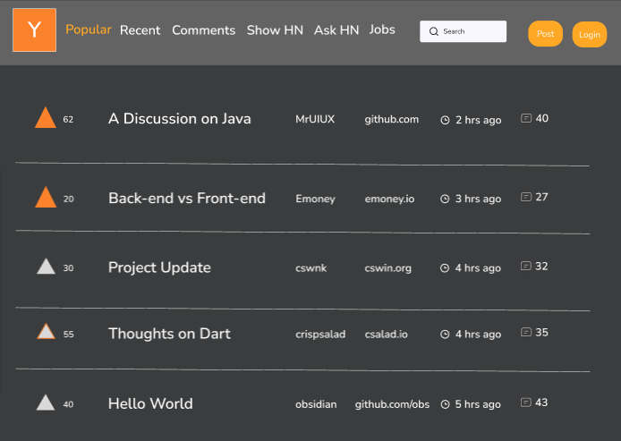

Redesigning a Website: Hacker News
Responsive Redesign
This assignment is made to practice the workflow of redesigning a simple website.
This assignment has allowed me to practice the skills necessary to analyze and identify flaws in an existing interface,
create low-fidelity and high-fidelity prototypes for various screen sizes, and ultimately build a responsive website based on those prototypes.
For this assignment I choose to redesign Hacker News. Hacker News (sometimes abbreviated as HN) is a social news website focusing on computer science and entrepreneurship.
In my mind, this Hacker News could be thought as a very niche messageboard reminiscent of early messageboards.
Identifying Usability Problems
Usability
-
The user may not know the home page contains the most recent, top-voted posts.
-
The page navigation buttons at the top of the website aren’t very descriptive.
-
Users may not know what the ‘Ask’ Section holds. Currently, the page holds 'ASK HN' posts which users can post. Questions for other Hacker News users to answer–but this is not apparent before clicking.
-
The same issue arises with the ‘Show’ tab. Upon clicking the user is directed to a page that is made to present 'Show HN' posts. The navigation bar does not make this entirely clear.
-
The difference between posts on the homepage, ‘Show HN’ posts, and ‘ASK HN’ posts are not clear at a first glance and require the user to navigate all three pages to determine the differences between these kinds of posts.
-
A user might be confused specifically about how Show HN posts and Regular HN posts differ. This requires the user to navigate through various posts and get an understanding of the purpose of each type of post.
-
The search bar is at the bottom. Some users might default to using CTRL+F in order to find a post.
-
The placement of the search bar feels counterintuitive and goes against the widely used pattern of placing a search bar at the top of pages to indicate that content is readily available and accessible.
-
The contrast between the background and small text (website links, time posted, and description sentences at the top of some pages) is very weak. It may be difficult for some users to differentiate between the Light grayish yellow (#f6f6ef) and the light gray text.
-
The ‘More’ link does not look like it is an interactable button. It just looks like regular text. Some users may completely ignore this feature and find it hard to navigate to further information.
Learnability
-
In order to understand the contents of each page (new, past, comments, ask, show) users must traverse through each page and read the contents of each post to determine the differences. The contents of each page are not entirely clear from the current navigation bar at the top of the website.
-
It takes time to learn that a search bar exists due to the fact that the current search bar is all the way at the bottom of any page. Some users may not reach the bottom of the page. Therefore, it is as if the search bar does not exist.
-
Navigating various pages of posts is difficult. For example, if a user were to click ‘More’ at the bottom of the page, it would be unclear what page there are currently on or how to navigate back to a previous page.
Memorability
-
The website’s interface is relatively simple therefore there are a few actions to remember.
-
Navigating pages through the top navigation bar
-
Searching posts
-
Upvoting
-
Clicking on links relating to a given post
-
The hardest thing to remember would be how the posts are organized.
-
Remember the difference between ‘ASK HN’ vs ‘Show HN’
-
Accessing older posts is tricky
-
A user must navigate to the ‘old’ page within the navbar but trying to navigate/find the correct post may not be intuitive.
Hacker News low-fidelity prototypes
Fig. 1 Desktop Prototype
Fig. 2 Tablet Prototype
Fig. 3 Phone Prototype
(Sorry for the messsy handwriting while creating these lofi prototypes I had trouble working in Balasmiq.)
Notes on Lofi Prototypes
The changes to Hacker News that were implemented in these lofi prototypes are:
- Moving the search bar to the top of the page in order to make the user aware of this functionality and make the page more learnable
- Increasing the font of navigation buttons within the page header
- Renaming various navigation buttons in order to make their purpose a bit more clear
- Increasing the font of the Post Title
- Unrolling fields such as 'user', 'website', 'time since post', 'number of comments'
- Moving the number of upvotes next to the upvote button
- Making a dedicated 'More' button to replace the original 'More' hyperlink
There are still a couple things that aren't perfect within these lofi prototypes:
- The headers vary from device to device. If more time was allocated to redesigning the website it could be possible to create a more versatile header for all devices
-
Currently the biggest issue is the fact that the header needs space for all navigation buttons within the header.
-
We could possibly address this by having a drop-down navigation menu for all devices (desktop, tablet, & phone); however, this might not be the best choice for all devices.
-
The headers for each interface are a bit different; however, this variation was applied to best fit the device. To remedy this, we could possibly look at accepting a new header design.
Hacker News high-fidelity prototypes
Fig. 1 Style Sheet

Fig. 2 Desktop Prototype
Fig. 3 Tablet Prototype
Fig. 4 Phone Prototype
Notes on Hifi Prototypes
- In order to increase usability we unrolled all fields for a post and simply listed them in a row
- The contrast of text and the background are a glaring issue. This prototype tries to fix this by changing the background and text colors